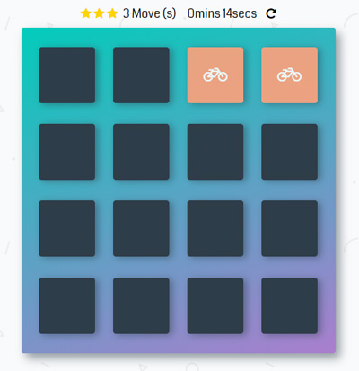

Introduction:
What is Memory Game? Memory game also know as Concentration, Match Match, Match Up, Pelmanism, Shinkei-suijaku, Pexeso or simply Pairs, is a card game in which all of the cards are laid face down on a surface and two cards are flipped face-up over each turn. The objective of the game is to turn over pairs of matching cards. It is a particularly good game for young children, though adults may find it challenging and stimulating as well.
This computer version is a basic matching game to test the player's memory. In a deck of paired cards, the player needs to match each pair to win the game.

How to Play
- The Deck is made up of 8 pairs of matching cards that are randomly placed. Opening matching pairs keeps the cards open.
- The game starts counting from your first move.(When you open two cards, wither matched or not, counts as a "move").
- The game starts with 3 Gold Stars at the top of the page. To get the three stars, you will need to match all cards in not less than 12 moves. You lose one star at move number 12 and another at move number 16.
- You win when all the cards have been matched.
- You can restart the game at any point by clicking on the restart button at the same line with the timer or by refreshing your browser.
- I noticed the game does not function well in Microsoft Edge - It should be a compatability issue. To have a more interactive experience, please use Google Chrome or Mozilla Browser.
- This game is still on development stage, if you notice any bug, please reach out to me using the contact in the footer below.
Instructions
- Click on a card
- Keep revealing cards and working your memory to remember each unveiled card.
- Match cards properly with less moves and in faster time